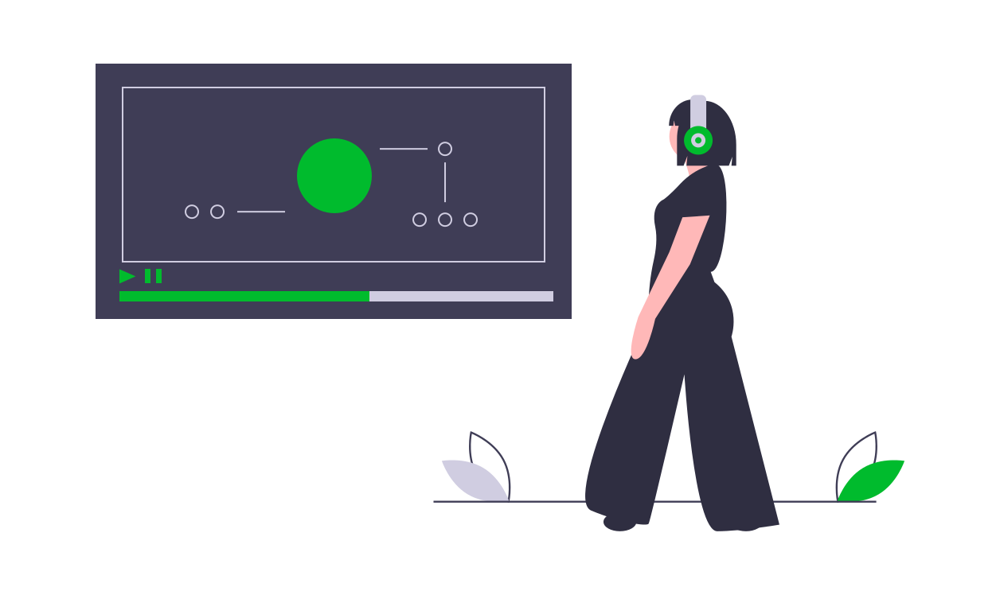
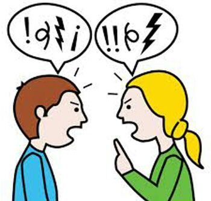

Luis Márquez
Hola, mi nombre es Luis Márquez.
Descubre más sobre mí
Inicio
(current)
Radio Online
Acerca
¡Escuchame!
¡Hola y Bienvenid@!
Mientras estamos en tiempo de
Pandemia,
sigamos las recomendaciones de la
OMS
ENTRADAS

Empresas, personas y modelos productivos en la era pos-COVID.
Publicado 24 Abril 2020
8 min read
...
¿y tu qué crees que aprenderemos de esta crisis? ¿Cambiará nuestro modelo productivo? ¿Nos acordaremos de aquellas empresas que han sido socialmente responsables durante la pandemia? ¿Se instalará el teletrabajo como opción universal? ¿Servirá lo vivido para entender el impacto del antiguo modelo productivo en el medioambiente…? Te agradezco que dejes como comentario tu punto de vista. Creo que se abre un interesante debate sobre cómo será la era pos-COVID....
Leer más →
Ni hibernación ni pausa, la vida sigue – lo queramos o no.
Publicado 05 Abril 2020
8 min read
...
Las palabras elegidas para dar forma a la narrativa – oficial e individual – sobre lo que nos ocurre son importantes. No podemos olvidar que, por suerte o por desgracia, repetir una palabra como un mantra no es suficiente para que se haga realidad...
Leer más →
Mantenga Los lazos de la comunicación.(Con Audio)
Publicado 01 Abril 2020
10 min read
...
El paso esencial para crear la unidad es establecer una identidad compartida, pero se necesita algo más para reforzar el mensaje de grupo. Los lazos de la comunicación han de cuidarse de todas las formas posibles para mantener un sentido de conexión...
Leer más →
25 actividades para aprovechar la cuarentena.
Publicado 29 marzo 2020
10 min read
...
Pasar la cuarentena encerrados en casa es una situación nueva para todos. En vez de subirnos por las paredes, vivámoslo como un retiro, aprovechándolo para crecer como personas y profesionales....
Leer más →
Si hacemos cualquier cosa para que las personas dependan de nosotros, estaremos en problemas, y ellas lo estarán también.
Publicado 27 marzo 2020
5 min read
...
Podemos observar como a lo largo de la historia, ciertos hombres fuertes y han apoderado de sus pueblos y los gobiernan con tanta fuerza que los que estamos fuera de esos regímenes nos...
Leer más →
Leyes para gestionar las emociones
Publicado 26 marzo 2020
3 min read
...
1. Principio de autonomina personal. Ayudate a ti mismo y los demás te ayudaran. Ayudarse a uno mismo es un principio esencial para la buena gestión emocional.
Leer más →
Escenarios económicos de la crisis del coronavirus
Publicado 21 marzo 2020
5 min read
...
Los economistas son conocidos por explicar lo que ya ha sucedido, y no siempre con acierto. Tratar de predecir lo que ocurrirá con la economía mundial debido al coronavirus puede ser más bien un ejercicio de economía ficción.
Leer más →

Identifica una agresión verbal ¿Qué es?
Publicado 18 marzo 2020
3 min read
...
Cuando piensas en una agresión verbal, ¿Qué cosas te vienen a la cabeza? Insultos, cuando te gritan, menosprecian, el tono en el cual te hablan, etc. son ejemplos de agresiones verbales
Leer más →
Cómo aprender a orar
Publicado 17 marzo 2020
5 min read
...
Día 1: PEDIR Pedir es lo primero que hace un niño cuando empieza a hablar. Los bebés, en cambio, piden llorando porque no pueden hablar. Para comer, para ir al baño, para que lo asistan un bebé llora y los padres asisten. En definitiva...
Leer más →
Previous
Next